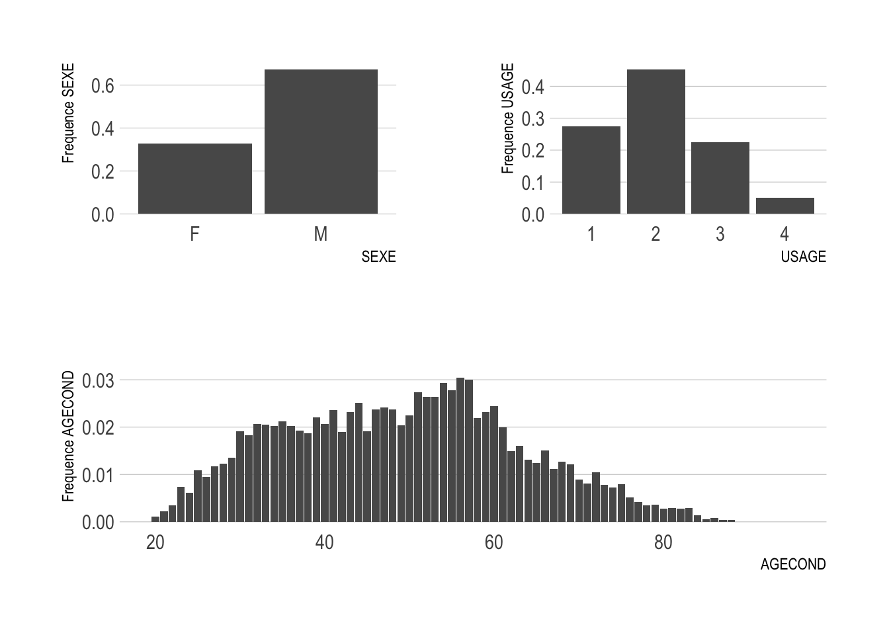
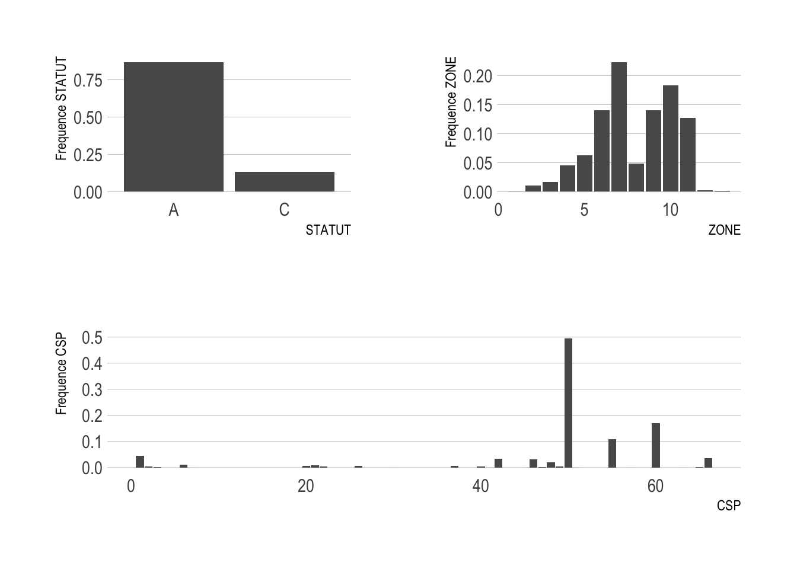

2 Représentations graphiques
Dans cette partie du projet, nous allons effectuer un ensemble de représentations graphiques afin de savoir l’impact des variables sur les sinistres.
Ce graphe suivant indique la fréquence des sinistre en fonction des differentes variables : sexe, zone, catégorie socio-professionnelle, age, usage du véhicule et statut matrimonial.
library(dplyr)
library(ggplot2)
B1 = database %>% select(SEXE = SEX,STATUT,ZONE,CSP,USAGE,AGECOND) #selection des variables.
plot_ <- function(df, N){
name = names(df)
for (i in name){
df0 <- data.frame(df[[i]],N) # Creation d'une df(Variables,N)
colnames(df0) <- c(i,'N')
s <- df0 %>% group_by(colonne = df0[[i]]) %>%
summarise(total = sum(N)) # Creation d'une df(groupe de Variables, Total)
# debut du code pour la figure
figure <- ggplot(data = s, aes(x = colonne, y = total/sum(total))) +
geom_col() +
xlab(i) + # Ajout du label de x
ylab(paste0("Frequence ",i)) + # Ajout du label de y
hrbrthemes::theme_ipsum(grid = "Y") # Ajout d'un theme pour la figure
# fin du code pour la figure
assign(paste0("fig",i),figure,.GlobalEnv) #assigantion de la figure i
}
}
plot_(B1,SumSINAPS) # Execution de la fonction precedente
(figSTATUT|figZONE)/figCSP